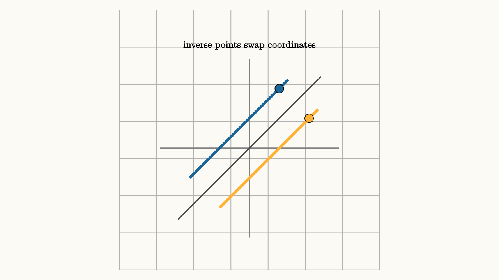

Inverses Undo With Domain Care
An inverse function is an undo button. If a function takes an input to an output, the inverse takes that output back to the original input.
For
the inverse is
The function doubles and adds $3$. The inverse subtracts $3$ and halves. Every output has exactly one input behind it, so the undo rule is clean.
The graph gives a second picture. A function and its inverse reflect across the line $y=x$. The point $(a,b)$ on the original graph becomes $(b,a)$ on the inverse graph because inputs and outputs trade roles.

source
background = [0.985, 0.98, 0.955, 1]
camera = Camera(4.6b)
let O = [0, -0.15, 0]
let U = 0.55
let P = |x, y| [O[0] + U * x, O[1] + U * y, 0]
mesh diagram = block {
. stroke{LIGHT_GRAY, 1.2} LineGrid([-2.4, 2.4, 8], [-2.4, 2.4, 8], 1)
. stroke{GRAY, 2} Line(start: P(-3, 0), end: P(3, 0))
. stroke{GRAY, 2} Line(start: P(0, -3), end: P(0, 3))
. stroke{DARK_GRAY, 2} Line(start: P(-2.4, -2.4), end: P(2.4, 2.4))
. stroke{BLUE, 4} Line(start: P(-2, -1), end: P(1.3, 2.3))
. stroke{ORANGE, 4} Line(start: P(-1, -2), end: P(2.3, 1.3))
. fill{BLUE} center{P(1, 2)} Circle(0.08)
. fill{ORANGE} center{P(2, 1)} Circle(0.08)
. center{[0, 1.75, 0]} color{BLACK} Text("inverse points swap coordinates", 0.64)
}Domain care enters when an output can come from more than one input. The function
sends both $2$ and $-2$ to $4$. If we ask for an inverse of the entire parabola, the output $4$ has two possible sources. A function must give one output for each input. An inverse must also give one output for each input. So the whole parabola cannot be undone by a single function.
The solution is to restrict the domain. If we choose $x\ge 0$, then $x^2$ is one-to-one. Each output $y\ge 0$ has one source:
If we choose $x\le 0$, the inverse is
Both choices are valid because each choice makes the original function reversible on its selected domain.
source
background = [0.985, 0.98, 0.955, 1]
camera = Camera(4.6b)
let O = [0, -1.2, 0]
let U = 0.62
let P = |x, y| [O[0] + U * x, O[1] + U * y, 0]
let Parabola = |restricted| {
var pts = []
let a = if (restricted) { 0 } else { -2 }
for (x in sample(a, 2, 90)) {
pts .= P(x, x * x)
}
return stroke{if (restricted) { BLUE } else { GRAY }, 4} Polyline(pts)
}
let Scene = |restricted, reflected| block {
. stroke{LIGHT_GRAY, 1} LineGrid([-2.6, 2.6, 10], [-0.4, 4.2, 8], 1)
. stroke{GRAY, 2} Line(start: P(-2.5, 0), end: P(2.5, 0))
. stroke{GRAY, 2} Line(start: P(0, -0.2), end: P(0, 4.3))
. stroke{DARK_GRAY, 2} Line(start: P(-0.3, -0.3), end: P(3.5, 3.5))
. Parabola(restricted)
if (reflected) {
var inv = []
for (x in sample(0, 4, 90)) {
inv .= P(x, sqrt(x))
}
. stroke{ORANGE, 4} Polyline(inv)
}
. center{[0, 1.8, 0]} color{BLACK} Text(if (restricted) { "domain x >= 0 gives one source" } else { "y = 4 has two sources" }, 0.62)
}
"two sources"
mesh scene = Scene(restricted: 0, reflected: 0)
play Write(0.8)
"choose a branch"
scene = Scene(restricted: 1, reflected: 0)
play Trans(1.0)
"reflect the branch"
scene = Scene(restricted: 1, reflected: 1)
play Trans(1.0)This is why inverse trigonometric functions have carefully chosen ranges. The sine function repeats forever. The equation
has infinitely many solutions. The inverse sine function, $\arcsin$, answers a narrower question: which angle in the chosen principal range has this sine value? The usual range is
On that interval, sine moves from $-1$ to $1$ without repeating an output. So $\arcsin$ can act like a function.
The same issue appears in algebraic solving. If
then
Taking a square root without the $\pm$ chooses only the nonnegative branch. The square root symbol $\sqrt{9}$ means the principal root $3$, while the equation $x^2=9$ asks for every number whose square is $9$.
The safest inverse routine is:
1. Decide whether the original function is one-to-one on the domain. 2. Restrict the domain when needed. 3. Swap input and output. 4. Solve for the new output. 5. State the domain and range of the inverse.
Inverses are powerful because they let us reverse a process. Domain restrictions are part of the process. They tell the inverse which branch of the original graph it is allowed to undo.
Composition gives the formal check. If $g$ is the inverse of $f$ on the chosen domain, then
for every allowed input $x$, and
for every allowed output $y$. The two equations check opposite directions. The first says the inverse recovers the original input after $f$ acts. The second says every output in the chosen range really comes from the inverse's answer.
For the linear example,
Then
and
For the square-root branch,
Now
because $x$ is restricted to be nonnegative. That same equation would fail as an inverse check on the whole real line, since $\sqrt{(-4)^2}=4$.
This is the small logical hinge behind inverse work. Solving
for $x$ gives an inverse candidate. The candidate becomes a true inverse only on a domain where the original function sends different inputs to different outputs. The horizontal line test is the graph version: every horizontal line should hit the chosen graph at most once.
Inverse functions also explain why logarithms undo exponentials so cleanly. The exponential function
is one-to-one for $b>0$ and $b\ne 1$. Its range is positive numbers. The logarithm
therefore has domain $y>0$. The inverse pair carries both equations:
and
The domain condition is the boundary of the undo button.